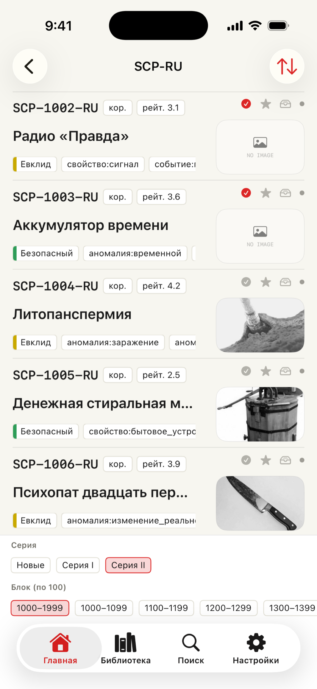
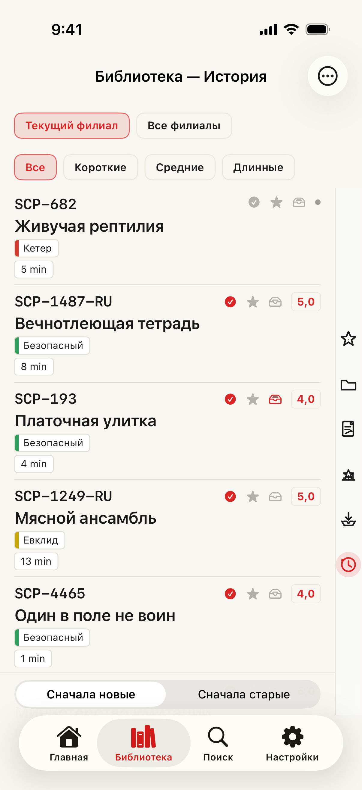

Free
Поиск по номеру, заголовку, тегам, классу, длине и оценке Wiki бесплатен. История, оценки, напоминания, виджеты, сводка наблюдений, журнал активности и список непрочитанного бесплатны. Избранное: 20; прочитать позже: 100.
SCP docs · 6.0.2 · 2026-10-10
Поиск по номеру, заголовку, тегам, классу, длине и оценке Wiki бесплатен. История, оценки, напоминания, виджеты, сводка наблюдений, журнал активности и список непрочитанного бесплатны. Избранное: 20; прочитать позже: 100.
Premium убирает рекламу и открывает выделения, заметки, озвучивание, офлайн, папки, поиск по заметкам и своим записям, сохранённые поиски и уведомления, подробный анализ. Без лимита подписки на избранное и список на потом (безопасный предел 10 000 на список). Месячная и годовая подписка.
Отдельно выберите URL, заголовок, текст, заметки и выделения; выбор сохраняется. Проверьте предпросмотр перед отправкой, копированием, сохранением файла или в зарегистрированное место. Здесь же доступен редактор карточек. Текст берётся из текущей готовой статьи в читалке, без массовой загрузки из Библиотеки.
Статьи читаются на языке филиала. Приложение и сайт: 17 языков. Источники, авторство и лицензии определяются исходными страницами.
App Store · iPhone / iPad · iOS 17+Reader / Catalog / Library


